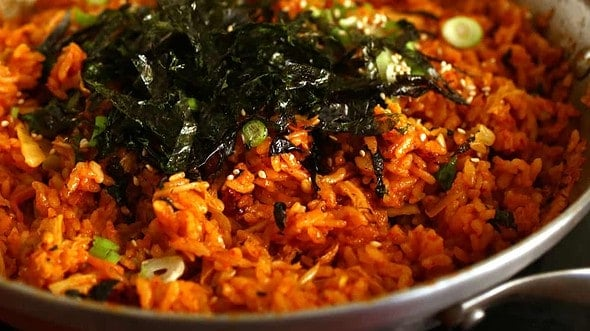

Kimchi Fried Rice

Description
This simple, simple dish is super, super tasty. It's just a few ingredients, but it’s a dish much loved by Koreans and a staple of our everyday lives.
This version is simple, but you can dress it up with a bit of beef, chicken, pork, ham, or even spam. Many Koreans also like to put a fried egg on top, but my family prefers this simple version that I'm showing you here.
Ingredients
- 3 bowls steamed rice
- 1 cup chopped kimchi
- 2-3 tablespoons gochujang
Steps
- Heat up a wide, flat pan or skillet. Add the vegetable oil.
- Add the kimchi and stir fry for 1 minute over medium-high heat.
- Add rice, kimchi juice, water, and gochujang. Stir all the ingredients together for about 7 minutes with a wooden spoon.
- Add sesame oil and remove from the heat.
- Garnish with sprinkled chopped green onion, roasted gim, and sesame seeds. Serve right away.
Back to Recipes